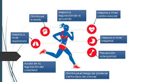
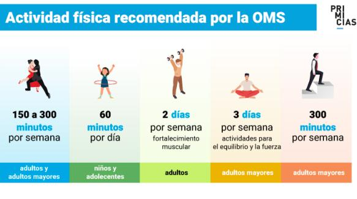
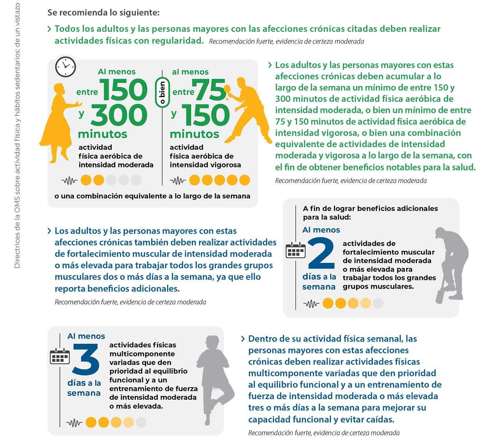

Beneficios de la Actividad Fisica


Instituto de Mejoramiento Profesional del Magisterio
El Instituto de Mejoramiento Profesional del Magisterio (IMPM) es una institución de la Universidad Pedagógica Experimental Libertador (UPEL). Se dedica a la formación y actualización de docentes en Venezuela. El IMPM ofrece cursos, diplomados, maestrías, especializaciones y doctorados. También cuenta con extensiones académicas en todo el país.
Beneficios de la Actividad Fisica

.jfif)
Beneficios de la actividad fisica
.jfif)
Beneficios de la Actividad Fisica
- La actividad física tiene importantes beneficios para la salud del corazón, el cuerpo y la mente.
- La actividad física contribuye a prevenir y gestionar enfermedades no transmisibles como las cardiovasculares, el cáncer y la diabetes.
- La actividad física reduce los síntomas de depresión y ansiedad.
- La actividad física mejora las habilidades de pensamiento, aprendizaje y juicio.
- La actividad física asegura un crecimiento y desarrollo saludables en los jóvenes.
- La actividad física mejora el bienestar general.
A nivel mundial, 1 de cada 4 adultos no alcanza los niveles de actividad física recomendados a nivel mundial.
Se podrían evitar hasta 5 millones de muertes al año si la población mundial fuera más activa
Las personas que son insuficientemente activas tienen un 20% a 30% más de riesgo de muerte en comparación con las personas que son suficientemente activas.
Más del 80% de la población adolescente mundial no tiene suficiente actividad física
Otros Beneficios de la Actividad Fisica
La actividad física tiene muchos beneficios para la salud, entre ellos:
- Reduce el riesgo de enfermedades: Disminuye el riesgo de padecer enfermedades cardiovasculares, diabetes tipo 2, cáncer de colon, de mama, de pulmón y de otros tipos de cáncer.
- Fortalece los huesos: Aumenta la densidad ósea y previene la osteoporosis.
- Mejora la salud del corazón: El ejercicio aeróbico hace que el corazón bombee más fuerte y se haga más eficiente.
- Mejora la salud mental: Reduce el estrés y la ansiedad, mejora el estado de ánimo y reduce los sentimientos de depresión.
- Mejora el sueño: Dormir mejor es uno de los beneficios de la actividad física.
- Mejora la movilidad muscular: La actividad física mejora la capacidad de movimiento y reduce el riesgo de caídas.
- Mejora el rendimiento cognitivo: La actividad física puede mejorar la capacidad de pensar con claridad y de cambiar rápidamente entre tareas.
- Mejora la autoestima y el bienestar emocional: La actividad física puede aumentar la autoestima y el bienestar emocional.
- Mejora la capacidad respiratoria: La actividad física mejora la capacidad respiratoria y la resistencia.
Actividad Fisica Segun la OMS
La actividad física consiste en cualquier movimiento corporal producido por los músculos esqueléticos con el consiguiente consumo de energía, define la Organización Mundial de la Salud (OMS).
Entre las actividades físicas más populares, la entidad sanitaria menciona: montar en bicicleta, pedalear, practicar deportes, y participar en actividades recreativas y juegos. “Todas ellas se pueden realizar con cualquier nivel de capacidad y para disfrute de todos”.
Asimismo, la OMS destaca que cualquier actividad física es mejor que la inactividad.
Segun la OMS

Segun la OMS

Segun la OMS